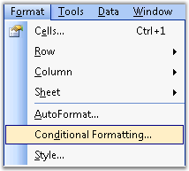
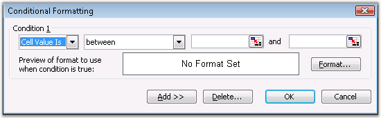
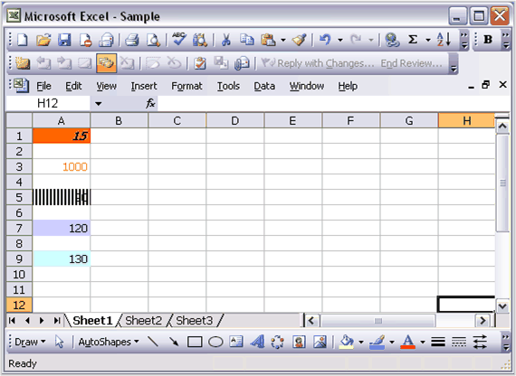
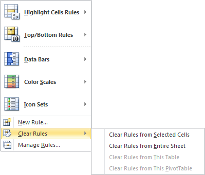
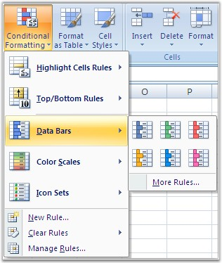
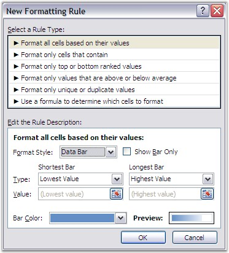
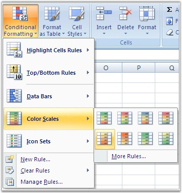
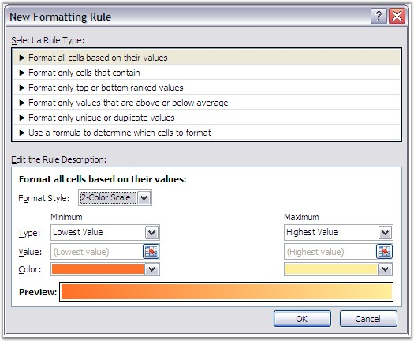
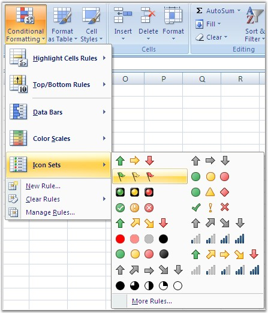
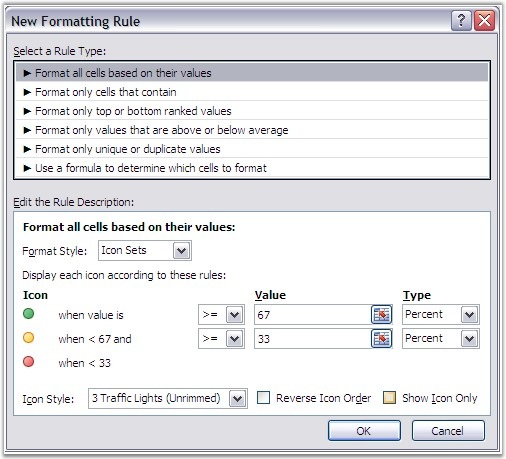

Conditional formatting is a feature by which the contents of a cell are dynamically formatted, based on a value. It allows you to define and apply formatting to some cells, text, and numbers, based on the criteria that is set. For example, you can format a time sheet, to point out the overtime obtained by the employee. You can also use it to track the best sales employees in a company, by setting a quota that makes a cell range particular.
In MS Excel, Click the Format menu and then click Conditional Formatting. You can use any criteria of your choice. The formatting could be applied to cells' values or a particular formula.

Figure 46: Conditional Formatting option displayed in Format Menu

Figure 47: Using Conditional Formatting Feature in MS Excel
Note: Excel allows the addition of a maximum of three conditions only, for the same cell in the Biff8 format. However, this restriction is overcome in Excel 2007 formats.
Conditional Formatting in XlsIO
XlsIO allows to create conditional formats by using IConditionFormats, and various conditions can be set by using its properties. It also provides support for applying more than three conditional formats in the same cell, in the .xlsx format.
For more details, see http://www.syncfusion.com:91/products/xlsio/backoffice/Articles/conditional_formatting.aspx.
Following is the code snippet for creating and applying various conditional formats in XlsIO.
|
[C#]
// Applying conditional formatting to "A1" for format type as CellValue(Between). IConditionalFormats condition = sheet.Range["A1"].ConditionalFormats;
// Adding formats to IConditionalFormats collection. IConditionalFormat condition1 = condition.AddCondition(); sheet.Range["A1"].Text = "Enter a Number between 10 to 20"; condition1.FirstFormula = "10"; condition1.SecondFormula = "20";
// Setting format properties. condition1.Operator = ExcelComparisonOperator.Between; condition1.FormatType = ExcelCFType.CellValue; condition1.BackColor = ExcelKnownColors.Light_orange; condition1.IsBold = true; condition1.IsItalic = true;
// Applying conditional formatting to "A3" for format type as CellValue(Equal). IConditionalFormats condition2 = sheet.Range["A3"].ConditionalFormats;
// Adding formats to the IConditionalFormats collection. IConditionalFormat condition3 = condition2.AddCondition(); sheet.Range["A3"].Text = "Enter the Number as 1000";
// Setting format properties. condition3.FormatType = ExcelCFType.CellValue; condition3.Operator = ExcelComparisonOperator.Equal; condition3.FirstFormula = "1000"; condition3.FontColor = ExcelKnownColors.Magenta;
// Applying conditional formatting to "A5" for format type as CellValue (Not between). IConditionalFormats condition4 = sheet.Range["A5"].ConditionalFormats;
// Adding formats to the IConditionalFormats collection. IConditionalFormat condition5 = condition4.AddCondition(); sheet.Range["A5"].Text = "Enter a Number not between 100 to 200";
// Setting format properties. condition5.FormatType = ExcelCFType.CellValue; condition5.Operator = ExcelComparisonOperator.NotBetween; condition5.FirstFormula = "100"; condition5.SecondFormula = "200"; condition5.FillPattern = ExcelPattern.DarkVertical;
// Applying conditional formatting to "A7" for format type as CellValue(LessOrEqual). IConditionalFormats condition6 = sheet.Range["A7"].ConditionalFormats;
//Adding formats to IConditionalFormats collection IConditionalFormat condition7 = condition6.AddCondition(); sheet.Range["A7"].Text = "Enter a Number which is less than or equal to 1000";
// Setting format properties. condition7.FormatType = ExcelCFType.CellValue; condition7.Operator = ExcelComparisonOperator.LessOrEqual; condition7.FirstFormula = "1000"; condition7.BackColor = ExcelKnownColors.Light_green;
// Applying conditional formatting to "A9" for format type as CellValue(NotEqual). IConditionalFormats condition8 = sheet.Range["A9"].ConditionalFormats;
// Adding formats to the IConditionalFormats collection. IConditionalFormat condition9 = condition8.AddCondition(); sheet.Range["A9"].Text = "Enter a Number which is not equal to 1000";
// Setting format properties. condition9.FormatType = ExcelCFType.CellValue; condition9.Operator = ExcelComparisonOperator.NotEqual; condition9.FirstFormula = "1000"; condition9.BackColor = ExcelKnownColors.Lime; |
|
[VB.NET]
' Applying conditional formatting to "A1" for format type as CellValue(Between). Dim condition As IConditionalFormats = sheet.Range("A1").ConditionalFormats
' Adding formats to the IConditionalFormats collection. Dim condition1 As IConditionalFormat = condition.AddCondition() sheet.Range("A1").Text = "Enter a Number between 10 to 20" condition1.FirstFormula = "10" condition1.SecondFormula = "20"
' Setting format properties. condition1.Operator = ExcelComparisonOperator.Between condition1.FormatType = ExcelCFType.CellValue condition1.BackColor = ExcelKnownColors.Light_orange condition1.IsBold = True condition1.IsItalic = True
' Applying conditional formatting to "A3" for format type as CellValue(Equal). Dim condition2 As IConditionalFormats = sheet.Range("A3").ConditionalFormats
' Adding formats to the IConditionalFormats collection. Dim condition3 As IConditionalFormat = condition2.AddCondition() sheet.Range("A3").Text = "Enter the Number as 1000"
' Setting format properties. condition3.FormatType = ExcelCFType.CellValue condition3.Operator = ExcelComparisonOperator.Equal condition3.FirstFormula = "1000" condition3.FontColor = ExcelKnownColors.Magenta
' Applying conditional formatting to "A5" for format type as CellValue(Not between). Dim condition4 As IConditionalFormats = sheet.Range("A5").ConditionalFormats
' Adding formats to the IConditionalFormats collection. Dim condition5 As IConditionalFormat = condition4.AddCondition() sheet.Range("A5").Text = "Enter a Number not between 100 to 200"
' Setting format properties. condition5.FormatType = ExcelCFType.CellValue condition5.Operator = ExcelComparisonOperator.NotBetween condition5.FirstFormula = "100" condition5.SecondFormula = "200" condition5.FillPattern = ExcelPattern.DarkVertical
' Applying conditional formatting to "A7" for format type as CellValue(LessOrEqual). Dim condition6 As IConditionalFormats = sheet.Range("A7").ConditionalFormats
' Adding formats to the IConditionalFormats collection. Dim condition7 As IConditionalFormat = condition6.AddCondition() sheet.Range("A7").Text = "Enter a Number which is less than or equal to 1000"
' Setting format properties. condition7.FormatType = ExcelCFType.CellValue condition7.Operator = ExcelComparisonOperator.LessOrEqual condition7.FirstFormula = "1000" condition7.BackColor = ExcelKnownColors.Light_green
' Applying conditional formatting to "A9" for format type as CellValue(NotEqual). Dim condition8 As IConditionalFormats = sheet.Range("A9").ConditionalFormats
' Adding formats to the IConditionalFormats collection. Dim condition9 As IConditionalFormat = condition8.AddCondition() sheet.Range("A9").Text = "Enter a Number which is not equal to 1000"
' Setting format properties. condition9.FormatType = ExcelCFType.CellValue condition9.Operator = ExcelComparisonOperator.NotEqual condition9.FirstFormula = "1000" condition9.BackColor = ExcelKnownColors.Lime |

Figure 48: XlsIO with Conditional Formatting
Reading Conditional Formats in XlsIO
XlsIO also provides support for reading conditional formats. Following code example illustrates this.
|
[C#]
// Read Conditional Formatting Settings. this.textBox1.Text = sheet.Range["A1"].ConditionalFormats[0].FormatType.ToString(); this.textBox2.Text = sheet.Range["A1"].ConditionalFormats[0].Operator.ToString(); this.textBox3.Text = sheet.Range["A1"].ConditionalFormats[0].BackColor.ToString(); |
|
[VB.NET]
' Read Conditional Formatting Settings. Me.textBox1.Text = sheet.Range("A1").ConditionalFormats(0).FormatType.ToString() Me.textBox2.Text = sheet.Range("A1").ConditionalFormats(0).Operator.ToString() Me.textBox3.Text = sheet.Range("A1").ConditionalFormats(0).BackColor.ToString() |
Removing Conditional Formats in MS-Excel
With Microsoft Excel, you can delete conditional formats from the selected cells or from the entire sheet.
To remove the conditional formats in MS-Excel:
1. Select the cell that has the conditional format that you want to delete.
2. Click Conditional Formatting on Home tab, and then select Clear Rules. The Clear Rules property can be applied to the selected cells or to the entire sheet.

Figure 49: Removing Conditional Format by using Excel
Removing Conditional Formats in XlsIO
XlsIO also provides support for removing the conditional formats. Following are the methods for removing the conditional formats associated with the IConditionalFormat interface.
· Remove
· RemoveAt
Removing Conditional Formats at specified range
XlsIO removes the conditional formats at specified range by using Remove Method.
Following code example illustrates this.
|
[C#] // Removing Conditional Format at the specified Range sheet.Range["E5"].ConditionalFormats.Remove(); |
|
[VB.NET] ' Removing Conditional Format at the specified Range sheet.Range["E5"].ConditionalFormats.Remove() |
Removing Conditional Formats at specified index value
XlsIO removes the conditional formats at specified index value by using RemoveAt Method
Following code example illustrates this.
|
[C#] // Removing Conditional Format at the specified Range sheet.Range["E5"].ConditionalFormats.RemoveAt(0); |
|
[VB.NET] ' Removing Conditional Format at the specified Range sheet.Range["E5"].ConditionalFormats.RemoveAt(0) |
Removing Conditional Formats from entire sheet
XlsIO also provides support for removing conditional formats from the entire sheet. Following code example illustrates this.
|
[C#] // Removing Conditional Formatting Settings From Entire Sheet. sheet.UsedRange.Clear(ExcelClearOptions.ClearConditionalFormats);
|
|
[VB.NET] 'Removing Conditional Formatting Settings From Entire Sheet. sheet.UsedRange.Clear(ExcelClearOptions.ClearConditionalFormats) |
Using FormulaR1C1 property in Conditional Formats
XlsIO returns or sets the formula for the conditional format by using R1C1-style notation. Following code example illustrates this.
|
[C#] // Using FormulaR1C1 property in Conditional Formatting IConditionalFormats condition = worksheet.Range["E5:E18"].ConditionalFormats;
IConditionalFormat condition1 = condition.AddCondition();
condition1.FirstFormulaR1C1 = "=R[1]C[0]" ; condition1.SecondFormulaR1C1 = "=R[1]C[1]" ;
|
|
[VB.NET] ' Using FormulaR1C1 property in Conditional Formatting Dim condition As IConditionalFormats = sheet.Range("E5:E18").ConditionalFormats Dim condition1 As IConditionalFormat = condition.AddCondition() condition1.FirstFormulaR1C1 = "=R[1]C[0]" condition1.SecondFormulaR1C1 = "=R[1]C[1]" |
Advanced Conditional Formatting
See Also
Excel 2007 introduces a new formatting that highlights cells once it meets respective constraints. Three new visualizations such as Data Bars, Color Scales, and Icon Sets help you to explore large datasets, identify trends and exceptions, and quickly compare data.
Data Bars
Data Bars give you an opportunity to create visual effects in your data that help you see how the value of a cell compares with other cells.
Excel compares the values in each of the selected cells, and draws a data bar in each cell representing the value of that cell relative to the other cells in the selected range. This bar provides a clear visual cue for users, making it easier to pick out larger and smaller values in a range.

Figure 50: Data Bars
MS Excel enables to set these formats through the Conditional Formatting menu. It also allows to set the criteria through the New Formatting Rule dialog box shown below.

Figure 51: New Formatting Rule Dialog for setting Data Bar
Color Scales
Color Scales let you create visual effects in your data, to see how the value of a cell compares with the values in a range of cells. A color scale uses cell shading, as opposed to bars, to communicate relative values. This is especially useful when you want to communicate more about your data, beyond the relative size of the value of a cell.

Figure 52: Color Scales
You can customize the criteria through the New Formatting Rule dialog box in MS Excel.

Figure 53: New Formatting Dialog Box for setting Color Scales
Icon Sets
Icon Sets give you an opportunity to create visual effects in your data, to see how the value of a cell compares with other cells. Excel 2007 offers several choices of icon sets. You can choose the icons that are most appropriate for the data you are using. Icon sets come in three sizes, so as you increase or decrease the font size, the icon becomes larger or smaller, appropriately.

Figure 54: Icon Sets
It is possible to hide the value of the cell and just draw the icon, while applying a conditional formatting rule for icon sets, by using the New Formatting Rule dialog box.

Figure 55: New Formatting Rule for setting Icon Sets
Visualizations in XlsIO
XlsIO also provides support for these visualizations through IDataBar, IconSet and IColorScale interfaces. You can also customize these visualizations by specifying the criteria, by using XlsIO. Following code example illustrates how to apply and customize various visualizations.
|
[C#]
//Add condition for the range IConditionalFormats conditionalFormats = worksheet.Range["C7:C46"].ConditionalFormats; IConditionalFormat conditionalFormat = conditionalFormats.AddCondition();
//Set Data bar and icon set for the same cell //Set the conditionalFormat type conditionalFormat.FormatType = ExcelCFType.DataBar; IDataBar dataBar = conditionalFormat.DataBar;
//Set the constraint dataBar.MinPoint.Type = ConditionValueType.LowestValue; dataBar.MinPoint.Value = "0"; dataBar.MaxPoint.Type = ConditionValueType.HighestValue; dataBar.MaxPoint.Value = "0";
//Set color for Bar dataBar.BarColor = Color.FromArgb(156, 208, 243);
//Hide the value in data bar dataBar.ShowValue = false; dataBar.MaxPoint = new ConditionValue(ConditionValueType.HighestValue, "0"); dataBar.BarColor = Color.Red; dataBar.ShowValue = false;
//Add another condition in the same range conditionalFormat = conditionalFormats.AddCondition();
//Set Icon conditionalFormat type conditionalFormat.FormatType = ExcelCFType.IconSet; IIconSet iconSet = conditionalFormat.IconSet; iconSet.IconSet = ExcelIconSetType.FourRating; iconSet.IconCriteria[0].Type = ConditionValueType.LowestValue; iconSet.IconCriteria[0].Value = "0"; iconSet.IconCriteria[1].Type = ConditionValueType.HighestValue; iconSet.IconCriteria[1].Value = "0"; iconSet.ShowIconOnly = true;
//Sets Icon sets for another range conditionalFormats = worksheet.Range["E7:E46"].ConditionalFormats; conditionalFormat = conditionalFormats.AddCondition(); conditionalFormat.FormatType = ExcelCFType.IconSet; iconSet = conditionalFormat.IconSet; iconSet.IconSet = ExcelIconSetType.ThreeSymbols; iconSet.IconCriteria[0].Type = ConditionValueType.LowestValue; iconSet.IconCriteria[0].Value = "0"; iconSet.IconCriteria[1].Type = ConditionValueType.HighestValue; iconSet.IconCriteria[1].Value = "0"; iconSet.ShowIconOnly = true;
//Sets Color scale conditional format type conditionalFormats = worksheet.Range["D7:D46"].ConditionalFormats; conditionalFormat = conditionalFormats.AddCondition(); conditionalFormat.FormatType = ExcelCFType.ColorScale; IColorScale colorScale = conditionalFormat.ColorScale;
//Sets 3 - color scale. colorScale.SetConditionCount(3);
colorScale.Criteria[0].FormatColorRGB = Color.FromArgb(230, 197, 218); colorScale.Criteria[0].Type = ConditionValueType.LowestValue; colorScale.Criteria[0].Value = "0";
colorScale.Criteria[1].FormatColorRGB = Color.FromArgb(244, 210, 178); colorScale.Criteria[1].Type = ConditionValueType.Percentile; colorScale.Criteria[1].Value = "50";
colorScale.Criteria[2].FormatColorRGB = Color.FromArgb(245, 247, 171); colorScale.Criteria[2].Type = ConditionValueType.HighestValue; colorScale.Criteria[2].Value = "0"; |
|
[VB.NET]
'Add condition for the range Dim formats As IConditionalFormats = sheet.Range("C7:C46").ConditionalFormats Dim format As IConditionalFormat = formats.AddCondition()
'Set Data bar and icon set for the same cell 'Set the format type format.FormatType = ExcelCFType.DataBar Dim dataBar As IDataBar = format.DataBar
'Set the constraint dataBar.MinPoint.Type = ConditionValueType.LowestValue dataBar.MinPoint.Value = "0" dataBar.MaxPoint.Type = ConditionValueType.HighestValue dataBar.MaxPoint.Value = "0"
'Set color for Bar dataBar.BarColor = System.Drawing.Color.FromArgb(156, 208, 243)
'Hide the value in data bar dataBar.ShowValue = False
'Add another condition in the same range format = formats.AddCondition()
'Set Icon format type format.FormatType = ExcelCFType.IconSet Dim iconSet As IIconSet = format.IconSet iconSet.IconSet = ExcelIconSetType.FourRating iconSet.IconCriteria(0).Type = ConditionValueType.LowestValue iconSet.IconCriteria(0).Value = "0" iconSet.IconCriteria(1).Type = ConditionValueType.HighestValue iconSet.IconCriteria(1).Value = "0" iconSet.ShowIconOnly = True
'Sets Icon sets for another range formats = sheet.Range("E7:E46").ConditionalFormats format = formats.AddCondition() format.FormatType = ExcelCFType.IconSet iconSet = format.IconSet iconSet.IconSet = ExcelIconSetType.ThreeSymbols iconSet.IconCriteria(0).Type = ConditionValueType.LowestValue iconSet.IconCriteria(0).Value = "0" iconSet.IconCriteria(1).Type = ConditionValueType.HighestValue iconSet.IconCriteria(1).Value = "0" iconSet.ShowIconOnly = True
'Sets Color Scale conditional format type formats = sheet.Range("D7:D46").ConditionalFormats format = formats.AddCondition() format.FormatType = ExcelCFType.ColorScale Dim colorScale As IColorScale = format.ColorScale
'Sets 3 - color scale. colorScale.SetConditionCount(3)
colorScale.Criteria(0).FormatColorRGB = System.Drawing.Color.FromArgb(230, 197, 218) colorScale.Criteria(0).Type = ConditionValueType.LowestValue colorScale.Criteria(0).Value = "0"
colorScale.Criteria(1).FormatColorRGB = System.Drawing.Color.FromArgb(244, 210, 178) colorScale.Criteria(1).Type = ConditionValueType.Percentile colorScale.Criteria(1).Value = "50"
colorScale.Criteria(2).FormatColorRGB = System.Drawing.Color.FromArgb(245, 247, 171) colorScale.Criteria(2).Type = ConditionValueType.HighestValue colorScale.Criteria(2).Value = "0" |
Figure 56: XlsIO Visualization
Note: XlsIO visualization has been enhanced with backward compatibility for Advanced Conditional Formatting.